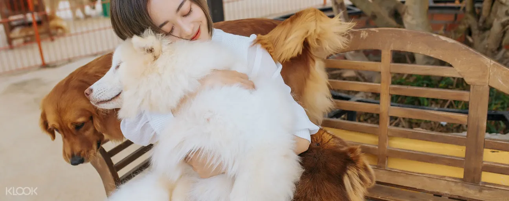

Vì sao bạn nên chọn tham quan nông trại cún Puppy Farm tại Đà Lạt?
Bạn yêu những chú cún dễ thương? Hay bạn muốn trải nghiệm một địa điểm du lịch mới tại Đà Lạt? Trại cún Puppy Farm Đà Lạt chắc chắn là địa điểm mà bạn không nên bỏ qua. Nông trại cún Puppy Farm là một điểm tham quan mới lạ, thu hút nhiều khách du lịch với nhiều giống chó đẹp và các hoạt động hấp dẫn đi kèm. Ngoài những chú cún siêu thân thiện và đáng yêu ra, bạn sẽ có cơ hội chụp những bức ảnh tuyệt vời tại cánh đồng hoa tuyệt đẹp ở gần vườn nông sản công nghệ cao. Vừa nhìn ngắm, vừa chơi đùa với những chú cú, vừa thưởng thức trái cây tươi thì còn gì bằng.
Vé nông trại cún Puppy Farm Đà Lạt có gì đặc sắc?
Đến với Puppy Farm Đà Lạt, bạn sẽ có cơ hội bầu bạn và gần gũi với rất nhiều giống chó đáng yêu và dễ thương. Khu vực tham quan cún chia thành nhiều vị trí tương ứng với từng loại cún như Alaska, Husky,... Đây chính là thiên đường của những bạn yêu cún, khi đến Puppy Farm bạn hòa mình vào thế giới thú vị và sôi động của những chú chó. Được chụp ảnh, nô đùa và cho cún ăn, chắc chắn đây là những trải nghiệm khó quên khi bước chân đến trại cún Puppy Farm Đà Lạt.
Đừng quên ghé qua cánh đồng hoa tuyệt đẹp tại Puppy Farm để chụp những bức ảnh để đời cùng bạn bè và người thân nhé. Nổi bật nhất phải kể đến là cánh đồng hoa hướng dương rộng bạt ngàn với sắc vàng tựa như ánh nắng ban mai. Sau khi tham quan thỏa thích tại cánh đồng hoa, bạn sẽ ghé qua vườn nông sản công nghệ cao nhất tại Đà lạt. Là một địa điểm trồng các loại của quả tươi ngon như dâu tây công nghệ cao, bí ngô khổng lồ, vườn cà chua, dưa lưới, dưa hấu Nam Mỹ,…, vườn nông sản này không mất phí để tham quan vì đã bao gồm trong vé trang trại chó Đà Lạt Puppy Farm. Bạn có thể mua nông sản hoặc trái cây với giá cả phải chăng dao động theo từng mùa tại khu vực này.
Ghé thăm và chụp ảnh tự sướng với những chú chó thân thiện ở trại chó Puppy Farm Đà Lạt
Tại trang trại chó Đà Lạt, bạn có thể dành thời gian tận hưởng khoảnh khắc với những người bạn thân thiện và trung thành
Sau khi tham quan Đà Lạt nông trại cún, chìm đắm vào vẻ đẹp và màu sắc ở khu vườn bên cạnh với những cánh đồng hoa bạt ngàn